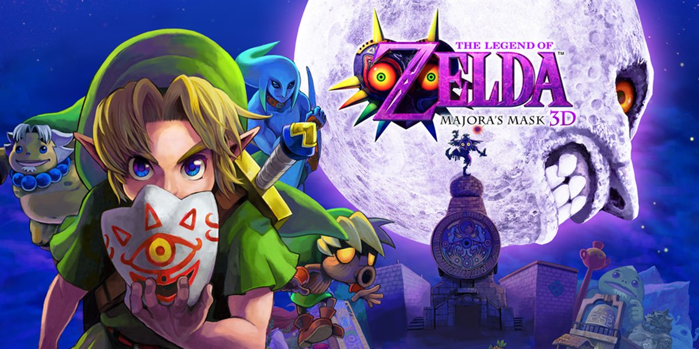
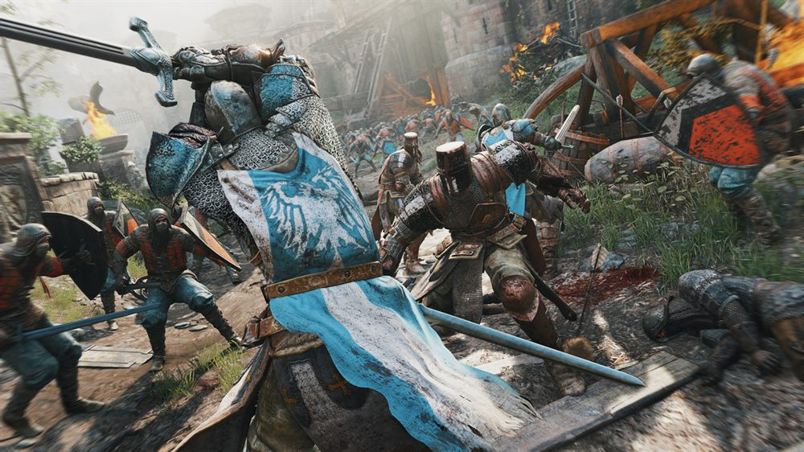
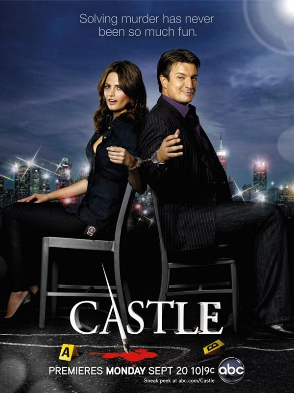

Una selección de los títulos a los que más horas he dedicado y que más me han marcado.
The Legend of Zelda: Majora's Mask

Uno de los juegos más oscuros de la saga.
La mecánica de los tres días y la atmósfera opresiva de Termina hacen de este juego una obra maestra. Pese a que lo jugué por primera vez en la 3DS, la versatilidad de los días y las misiones limitadas en el tiempo junto con las mecánicas de las máscaras lo hacen una combinación memorable.
Dark Souls III
Primer juego de la saga Souls a la que jugué. Marcó en gran medida mi modo de afrontar los juegos similares y estableció un estándar para la dificultad y el diseño de niveles.
Gameplay de Dark Souls III.Descripción
Clip breve de partida real (gameplay) de Dark Souls III que muestra su sistema de combate y ambientación.
For Honor

Caballeros, Vikingos y Samuráis en combate realista.
Pese a ser un juego multijugador bastante antiguo, el combate de esta entrega no ha sido igualado por ningún otro juego de pelea. La comunidad con sus más y sus menos permanece unida y activa.
Mis Películas y Series
Pese a que no soy un gran fanático de las películas y series, siempre hay alguna obra que por trama o mera nostalgia me engancha y hace volver constantemente.
Piratas del Caribe
Una saga de aventuras fantástica con uno de los personajes más icónicos del cine: el Capitán Jack Sparrow. La banda sonora de Hans Zimmer es sencillamente legendaria.
La icónica entrada del Capitán Jack Sparrow.Descripción
Escena de Piratas del Caribe con la icónica llegada en barco del Capitán Jack Sparrow acompañada por la banda sonora de Hans Zimmer.
Castle

Richard Castle y Kate Beckett.
La dinámica entre el escritor de novelas de misterio y la inspectora de policía es genial. Fue la primera serie policíaca que vi y se ha convertido en un referente del género sin importar los años que pasen. Combina perfectamente el humor con la resolución de casos policíacos, manteniéndote enganchado en cada episodio.
Dr. House
El Dr. House, el médico que no confía en sus pacientes ni sus compañeros.
Gregory House es un personaje fascinante. La forma en la que la serie plantea cada enfermedad como si fuera un rompecabezas lógico o un caso policial la convierte en una de mis series favoritas. He visto gran parte de los episodios múltiples veces pero la intriga junto con el humor irreverente de House lo hacen la mejor serie médica que he visto jamás.